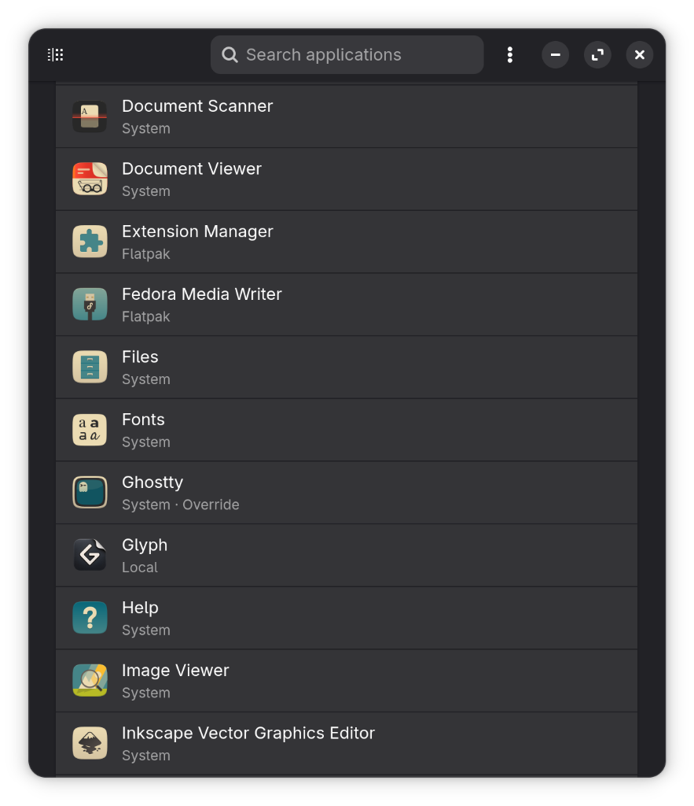
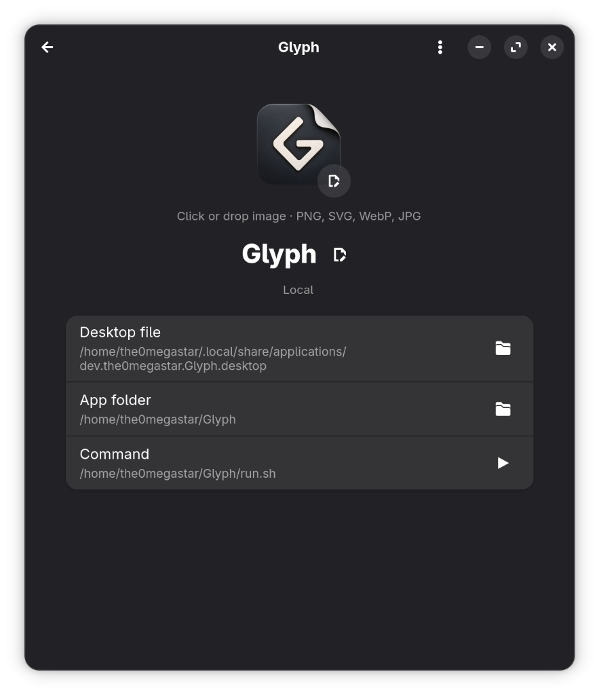

Customize Application Icons
on the Linux Desktop
An intuitive, modern utility to browse installed applications, customize launcher icons and display names, and cleanly restore original system defaults at any time without touching root files.


Designed for Complete Desktop Freedom
Personalize your app launchers and icons cleanly without root permissions or modifying package-managed files.
Safe User-Level Overrides
Never modifies system files in /usr/share/applications. Creates compliant FreeDesktop XDG overrides in ~/.local/share/applications that preserve original packages.
Drag & Drop Icon Replacement
Simply drag and drop any image (SVG, PNG, WebP, JPG) directly onto the 96px icon preview, or browse your files to set your favorite custom artwork.
Custom Display Names
Rename any application launcher right from the app page with automatic locale stripping and an instant one-click undo (↺) button.
Instant One-Click Restore
Easily revert individual icons and names, or click "Restore All to System Default" to safely wipe overrides and restore upstream package defaults.
Inspect & Test Launch
Inspect the resolved Desktop file, App folder, and start Command with direct links to open locations in Files, plus a header Launch button to test immediately.
Universal Compatibility
Works seamlessly across GNOME, KDE Plasma, COSMIC, Cinnamon, XFCE, and handles System packages, Flatpaks, Snaps, and local AppImages.
Clean Customization in Three Steps
No command line editing of .desktop files required.
Select an Application
Open Glyph and search through all installed desktop applications, or filter to see only apps you have customized.
Customize Icon & Name
Drop your favorite SVG or PNG icon onto the preview and adjust the display name to match your personal setup.
Enjoy & Restore Anytime
Your desktop menu and dash update automatically. If you ever change your mind, restore stock defaults with a single click.
Install Glyph
Run Glyph directly on any modern Linux desktop distribution.
Run Instantly from Source
Zero compilation required. Clone and launch directly with Python 3, GTK4, and Libadwaita:
Flatpak & Native Binaries
Multi-architecture Flatpak bundle (x86_64 & ARM64), AppImage, Debian/Ubuntu (.deb), and Fedora/RPM (.rpm) packages built automatically via GitHub Actions upon release tag.
Release Notes
Glyph v0.1.0
Initial Beta Release- Browse and search all installed desktop applications across System, Flatpak, and Snap.
- Set custom application launcher icons using SVG, PNG, WebP, or JPG files.
- Drag and drop image files directly onto the app icon preview.
- Custom application display names with automatic locale stripping and one-click undo.
- Filter dropdown to view all apps or only customized entries.
- Safe user-level overrides in
~/.local/share/applicationswithout touching system files. - One-click revert for individual icons, custom names, or all system defaults.
- Export and import overrides as
.tar.gzbundles for backup and dotfile sync. - Native Libadwaita dark and light mode design adhering to GNOME Human Interface Guidelines.